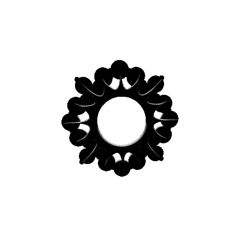

I aim to create objects that challenge the viewer’s perception, provoking and testing the rules that seem to be in place, design should not be judged by how well it fits within established expectations.
>Leon Remmert has been studying Product Design at the University of the Arts Berlin and The New School, Parsons in New York. He is engaged intensively with other artistic disciplines such as photography, painting, and drawing. In his current practice, he is interested in themes like transformation, technology, and recontextualizing established narratives.He follows an experimental and material-driven approach.
>Leon Remmert has been studying Product Design at the University of the Arts Berlin and The New School, Parsons in New York. He is engaged intensively with other artistic disciplines such as photography, painting, and drawing. In his current practice, he is interested in themes like transformation, technology, and recontextualizing established narratives.He follows an experimental and material-driven approach.
leonremmert1@gmail.com
@leonard0_tornado
